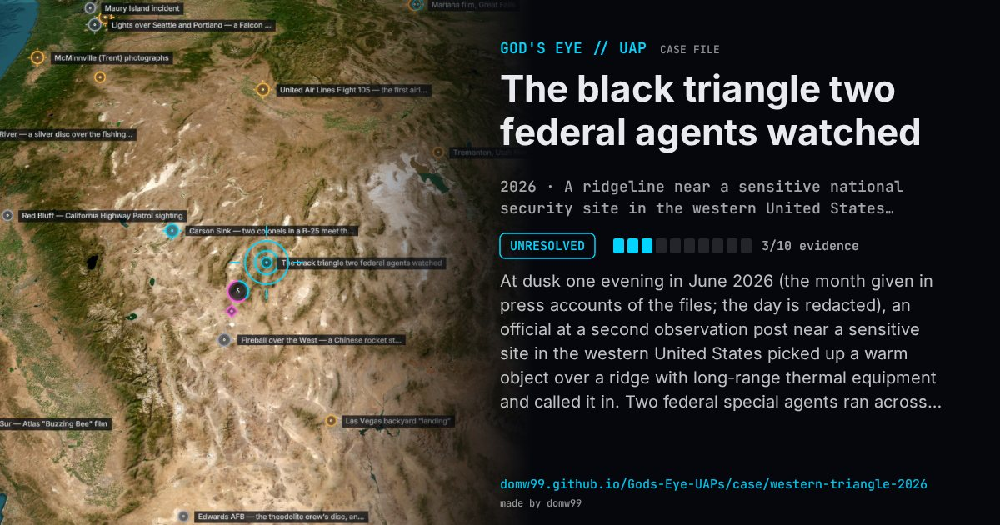

The black triangle two federal agents watched

At dusk one evening in June 2026 (the month given in press accounts of the files; the day is redacted), an official at a second observation post near a sensitive site in the western United States picked up a warm object over a ridge with long-range thermal equipment and called it in. Two federal special agents ran across their hilltop, and one watched through binoculars while the other used a handheld thermal monocular. They described a matte-black, flat triangle rising silently and perfectly level 200 to 300 feet above a ridge 1.4 to 3.2 miles away, hovering, then banking at the speed of a fighter jet and dropping into a canyon. Its heat was even across the whole airframe, with no exhaust or hot spots, and they heard nothing, though they said a small drone at that range would have been audible. A search of the canyon the next morning found no wreckage. The FBI statement (FBI-UAP-D043) and AARO’s debrief (DOW-UAP-D176) were released on October 23, 2026.
Explanation
AARO released it as unresolved and says it warrants more investigation because it resembles other reports from the western United States. There is no radar track, video or recording, and no instrumented speed or size; the two accounts disagree on the time (19:23 or 20:23) and on how long it lasted (three seconds or over 30), and the pictures published with them are illustrations. Sean Kirkpatrick, AARO’s first director, called the weight given to the witnesses “a classic case of authority bias” and compared triangle reports to early sightings of the F-117.
What was seen
Shape: A matte-black, non-reflective, seamless flat triangle like a delta-wing drone, about 9 to 15 feet across
Witnesses: Two federal special agents at an observation post; a third official at a second post with a thermal sensor
Duration: About 3 seconds (FBI statement) or about 30 seconds (AARO debrief)
Sources
- AARO — witness debrief DOW-UAP-D176 (war.gov)
- DOW-UAP-D176 (copy at The Black Vault)
- FBI-UAP-D043, the agents’ statement (copy at The Black Vault)
- IBTimes UK — Pentagon UFO files detail FBI agents’ report of silent black triangle (Oct 25, 2026)
- Fox News — Former Pentagon UFO chief disputes FBI black triangle sighting (Nov 1, 2026)
Browse
- United States
- 2020s
- Unresolved
- Military encounters
- Official government documents
- Police witnesses
- Triangles and V shapes